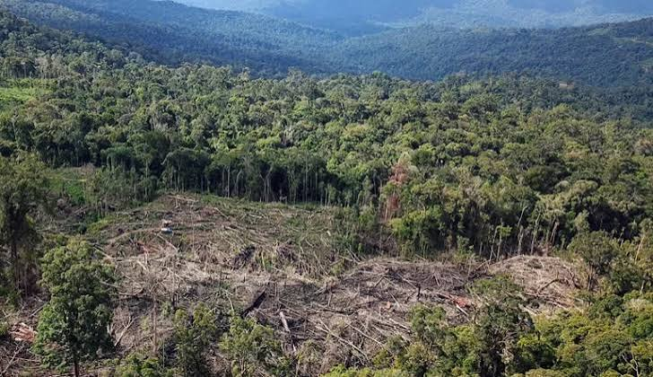
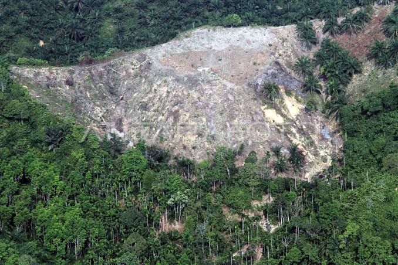
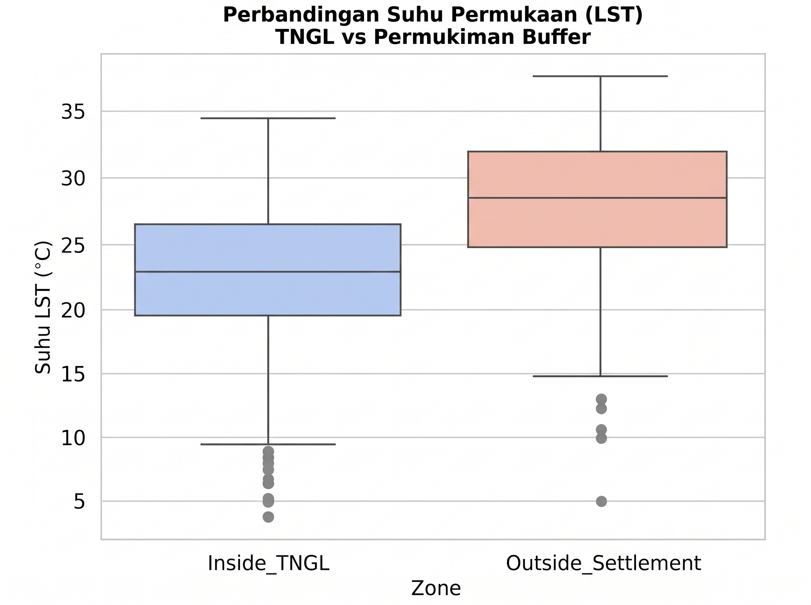
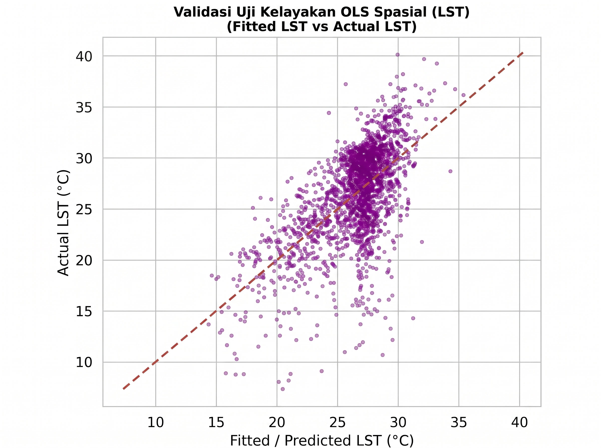
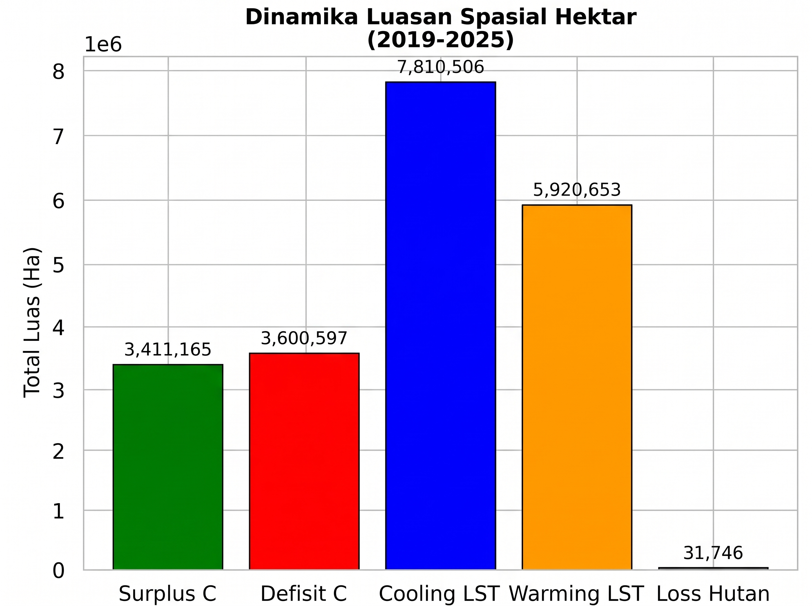
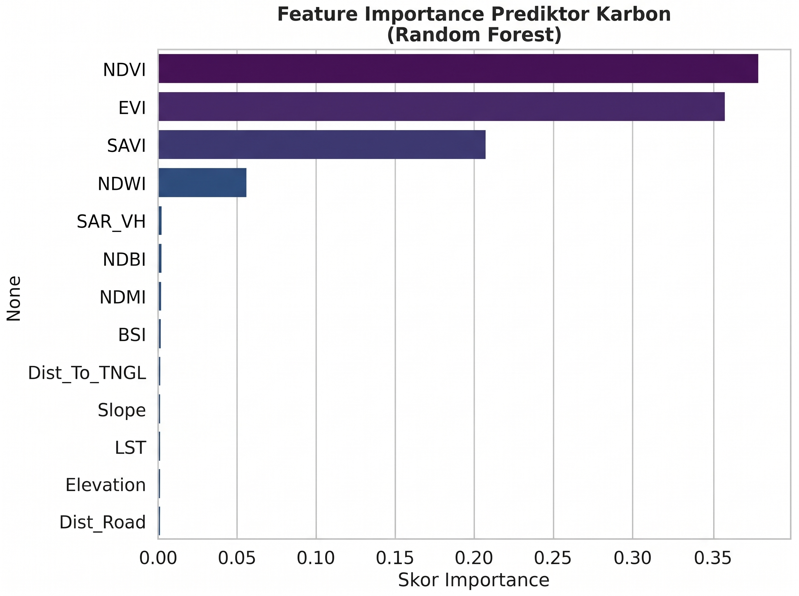

Mengapa Leuser Disebut Benteng? Latar Belakang, Pertanyaan & Metode
Diresmikan sebagai salah satu dari lima taman nasional pertama di Indonesia pada 6 Maret 1980 (Pengumuman Mentan No. 811/Kpts/Um/II/1980), taman nasional ini menjadi inti pengelolaan Kawasan Ekosistem Leuser (KEL) melalui Keppres No. 33 Tahun 1998 dan tercatat sebagai Situs Warisan Dunia UNESCO (Tropical Rainforest Heritage of Sumatra, 2004). Dari penunjukan awal seluas ±1,09 juta Ha (SK Menhut 276/1997), penetapan kawasan hutan tahun 2014 menghasilkan luas resmi Kawasan Ekosistem Leuser sekitar 830.268,95 Ha—dengan 625.115 Ha di Provinsi Aceh—di tengah bentang KEL seluas ±2,28 juta Ha.
Luas kawasan berbeda antarsumber (±830.268,95 Ha menurut penetapan 2014; ±838.872 Ha menurut Mongabay Indonesia 2017), sehingga batas area kajian wajib dinyatakan jelas. Dokumen proyek REDD KEL menyebut ±690.000 jiwa tinggal di dalam atau berdekatan dengan ekosistem ini dan laju deforestasi ±5.500 Ha/tahun pada 2000–2009. Karena disusun pengembang proyek, angka itu dipakai sebagai pembanding indikatif, bukan statistik resmi.
Hutan tropis adalah reservoir karbon terestrial (Pan et al. 2011; Mitchard 2018) sekaligus menurunkan suhu permukaan lewat evapotranspirasi dan peneduhan (Li et al. 2015; Alkama & Cescatti 2016). Kajian ini menguji apakah dua fungsi itu terbukti pada data satelit 2019–2025, dan seberapa kuat buktinya.
Tiga tujuan kajian
- Menilai efektivitas kawasan sebagai penyerap karbon dan penyangga iklim mikro lewat uji komparatif dan dinamika spasial 2019–2025.
- Menafsirkan validitas Random Forest, regresi OLS, dan LSTM bagi keandalan sistem monitoring.
- Mensintesis implikasi lingkungan dan sosial bagi masyarakat sekitar.
Mengapa metode ini dipilih
- Uji t Welch: membandingkan dua zona tanpa mengasumsikan ragam sama (hutan vs. permukiman); karena piksel sangat banyak, ukuran efek (Cohen’s d) perlu menyertai nilai p.
- Regresi OLS: koefisiennya mudah ditafsirkan untuk menimbang peran elevasi dan NDVI terhadap LST; residu diuji dengan Moran’s I.
- Random Forest: tahan multikolinearitas, tanpa asumsi distribusi, dan memberi peringkat kepentingan fitur untuk pemetaan biomassa.
- LSTM: menangkap ketergantungan jangka panjang pada deret kuartalan optik–SAR sebagai dasar peringatan dini.
Sumber data & arsitektur komputasi
| Komponen & Aset GEE | Produk / Resolusi | Peran & Prapemrosesan |
|---|---|---|
| Optik & Tutupan Lahan Sentinel-2 SR + Cloud Score+ |
S2_SR_HARMONIZED10–20 m |
Komposit median bebas awan (cs_cdf ≥ 0,5) untuk indeks vegetasi, kelembapan, air, dan tanah terbuka. |
| Termal & Terbangun Landsat 8/9 C02 L2 |
LC08/C02/T1_L2100 m (resampel 30 m) |
Penapisan awan/bayangan via bit ke-3 & ke-4 QA_PIXEL; ekstraksi LST, UHI, UTFVI, dan NDBI. |
| Radar Kanopi (SAR) Sentinel-1 GRD IW |
Polarisasi VH (10 m) Lintasan DESCENDING |
Menangkap struktur kanopi 3D menembus awan; lintasan tunggal mencegah distorsi lereng (foreshortening/layover). |
| Topografi, Cahaya Malam & LiDAR | NASADEM (30 m), VIIRS DNB, NASA GEDI L4B (1 km) | Kontrol gradien suhu altitudinal (lapse rate ±6,5 °C/km), intensitas ekonomi, serta target kalibrasi biomassa independen. |
| Aksesibilitas & Poligon Hutan | DSS_fixkel19/21/25 & erase_non_kel19/21/25 |
Gradien jarak Euclidean: Dist_Road (50 km), Dist_Facility (50 km), dan Dist_To_TNGL (150 km). |
Batas Wilayah & Data Pendukung Spasial
Untuk menguji rantai penalaran “hutan → karbon → pendinginan → tekanan terhadap manusia” pada platform Google Earth Engine (GEE) dan Python Geospasial (proyeksi EPSG:4326), batas wilayah (KEL_Aceh, toleransi penyederhanaan 500 m) dibagi menjadi tiga unit geometri:
- Zona Inti Kawasan Ekosistem Leuser (
tngl_geom): Poligon kawasan konservasi inti sebagai wilayah kontrol tutupan hutan terlindungi. - Zona Penyangga Total (
buffer_geom): Perluasan radius 100.000 meter (100 km) mengelilingi batas terluar Kawasan Ekosistem Leuser sebagai lanskap pengaruh ekologis regional. - Zona Penyangga Eksternal (
outside_buffer_geom): Selisih spasial antara buffer 100 km dan zona inti Kawasan Ekosistem Leuser yang merepresentasikan area permukiman, perkebunan, serta alih fungsi lahan.
Lima lapisan dasar berikut dimuat dari folder data/01_Batas_Dan_Data_Pendukung. Pilih tombol di bawah untuk menampilkannya di peta.
| Lapisan | Berkas | Fungsi dalam analisis |
|---|---|---|
| Batas inti KEL | 01_Batas_Kawasan_Inti_TNGL | Poligon zona inti sebagai kontrol tutupan hutan terlindungi dan garis pemisah zona dalam–luar. |
| Buffer 100 km | 02_Zona_Buffer_100km_Luar_TNGL | Lanskap pengaruh ekologis tempat permukiman, kebun, dan alih fungsi lahan dibandingkan dengan inti. |
| Klasifikasi elevasi | 06_Klasifikasi_Elevasi_DEM | Pengendali utama suhu (lapse rate ±6,5 °C/km) dan faktor pengganggu terbesar efek hutan. |
| Klasifikasi lereng | 07_Klasifikasi_Kemiringan_Lereng | Lereng curam yang kehilangan hutan memperbesar risiko longsor dan banjir bandang hilir. |
| Zonasi jarak | 10_Klasifikasi_Zonasi_Jarak_TNGL | Gradien jarak ke kawasan inti untuk membaca tekanan yang menjauh dari inti. |
Dinamika Hutan 2019–2025 & Status Tutupan Hutan per Tahun
Dua lapisan dari folder 02_Tutupan_Hutan_Dan_Permukiman dipakai di sini: dinamika perubahan hutan 2019–2025 dan status tutupan hutan pada tahun terpilih (gunakan tombol 2019 / 2021 / 2025 di bilah atas).
Berdasarkan integrasi poligon tutupan hutan multi-tahun (DSS_fixkel & erase_non_kel) dan deteksi kehilangan tutupan pohon (Hansen GFC), terdeteksi kehilangan hutan seluas 31.745,90 Ha sepanjang 2019–2025, atau berkisar ±4.500–5.300 Ha/tahun (dihitung dari 7 tahun hingga 6 interval). Sebagai pembanding historis, proyek REDD KEL mencatat laju deforestasi sekitar 5.500 Ha/tahun pada 2000–2009 akibat pembukaan jalan, jaringan listrik, bendungan, pertambangan, dan perluasan perkebunan sawit.
Forest₂₀₁₉ = 1 → Forest₂₀₂₅ = 0) belum dipisahkan secara spasial antara zona dalam Kawasan Ekosistem Leuser dan zona luar buffer. Pemisahan tegas dua zona ini merupakan bukti paling langsung efektivitas perlindungan kawasan.
19 Band Biofisik Terpadu & Potret Deforestasi Aceh
Setiap komposit tahunan (2019, 2021, 2025) dan 28 kuartal menurunkan 19 band terpadu dengan penapisan badan air berbasis MNDWI < 0. Estimasi biomassa menggunakan pendekatan hibrida optik–SAR yang dibatasi pada rentang 0–500 Ton/Ha sebelum dikalibrasi terhadap LiDAR NASA GEDI L4B:
(ST_B10 × 0,00341802 + 149,0) − 273,15
UHI = (LST − μ) / σ | UTFVI = (LST − μ) / (LST + 273,15)
NDVI < 0,2 ? 0 : exp(3,0 × NDVI) × 10 + (VH + 30) × 2
CS = 0,5 × AGB | Rate = (CS₂₀₂₅ − CS₂₀₁₉) / 6
Peta menampilkan data awal setiap parameter pada komposit 2019, 2021, dan 2025 (pilih tahun di bilah atas). Pembahasan karbon ada di Bab 5, termal di Bab 6.
Potret Kondisi Deforestasi & Tekanan Tutupan Lahan Aceh
Klik pada setiap foto dokumentasi di bawah untuk memperbesar tampilan dan melihat keterangan lapangan.

assets/deforestasi-aceh-1.jpg

assets/deforestasi-aceh-2.jpg

assets/deforestasi-aceh-3.jpg
Dist_Road) di hulu daerah aliran sungai.

assets/deforestasi-aceh-4.jpg
Cadangan Karbon 64,48 vs. 57,10 Ton/Ha: Biomassa, Laju & Uji Welch
Pengujian hipotesis membandingkan 1.500 titik sampel acak di dalam inti Kawasan Ekosistem Leuser (Inside_TNGL) melawan 1.500 titik sampel terstratifikasi pada daratan non-hutan (MNDWI < 0) di luar batas Kawasan Ekosistem Leuser (Outside_NonForest) pada resolusi 1.000 m (seed = 42). Uji beda Welch’s Independent Two-Sample T-Test (equal_var = False, dipilih karena ragam ekosistem hutan primer berbeda dengan permukiman) membuktikan perbedaan signifikan pada seluruh indikator utama:
| Indikator | Dalam KEL | Luar Buffer | Selisih & Uji |
|---|---|---|---|
| Carbon Stock (Ton/Ha) | 64,48 | 57,10 | +7,38 (+12,9%) t = 11,7848; p = 4,07×10⁻²⁹ |
Biomassa & laju. Karbon diturunkan dari AGB hibrida optik–SAR (CS = 0,5 × AGB), dan laju per tahun dihitung sebagai (CS₂₀₂₅ − CS₂₀₁₉) / 6. Peta laju menunjukkan di mana karbon bertambah atau berkurang; rangkuman luasnya ada di Bab 7.

assets/ bernama grafik-uji-ttest.png (atau ubah atribut src pada baris ini sesuai nama file di GitHub).

assets/ bernama grafik-distribusi-statistik.png (atau ubah atribut src pada baris ini sesuai nama file di GitHub).
Interpretasi Kritis Nilai Karbon: Nilai absolut 64,48 Ton/Ha lebih moderat dibandingkan rerata stok karbon tertimbang proyek REDD KEL (~207 tC/Ha atau 760 tCO₂e/Ha) maupun studi plot alometrik hutan hujan Bukit Lawang (Auliah & Onrizal 2020) akibat perbedaan cakupan biomassa atas permukaan vs. stok total, dominasi hutan pegunungan, serta efek pencampuran piksel (mixed pixel). Sementara itu, selisih moderat +12,9% menandakan zona luar buffer belum terdegradasi penuh dan masih didominasi agroforestri, kebun campuran, serta hutan sekunder.
Pendinginan Suhu Permukaan (−5,29 °C) & Fase Awal NDBI
Sinyal terkuat dalam data terlihat pada suhu permukaan (LST): kawasan dalam Kawasan Ekosistem Leuser lebih sejuk −5,29 °C dibandingkan zona luar (22,61 °C vs. 27,90 °C; t = −19,5547; p = 5,14×10⁻⁷⁰), disertai indeks Pulau Bahang (UHI) dan stres termal (UTFVI) yang rendah di area inti hutan.
| Indikator | Dalam KEL | Luar Buffer | Selisih & Uji |
|---|---|---|---|
| Suhu LST (°C) | 22,61 | 27,90 | −5,29 °C t = −19,5547; p = 5,14×10⁻⁷⁰ |
| NDBI | −0,2080 | −0,1807 | −0,0273 t = −13,0139 (efek kecil) |
| UHI & UTFVI | Lebih rendah | Lebih tinggi | Signifikan Tanpa tekanan termal di inti |
Pemisahan Efek Hutan vs. Topografi: Karena suhu udara turun sekitar 6,5 °C per kenaikan 1 km (lapse rate), perbedaan elevasi sekitar 800 meter antara inti Kawasan Ekosistem Leuser di pegunungan dan permukiman di dataran rendah sudah dapat menjelaskan sebagian besar selisih 5,29 °C. Model regresi linier berganda Ordinary Least Squares (OLS) pada 2.000 sampel buffer 100 km—menggunakan delapan variabel fisik teruji multikolinearitas (Elevation, Slope, Dist_Road, Dist_To_TNGL, NDVI, NDMI, NDBI, dan Nighttime_Lights dengan kriteria VIF < 5)—menghasilkan R² = 0,3871. Artinya, elevasi dan kehijauan vegetasi terbukti mengendalikan LST, sementara ~61% variasi suhu sisanya dipengaruhi albedo, kelembapan tanah, aspek lereng, emisivitas, dan tutupan awan.
Peluang Intervensi pada Zona NDBI: Nilai NDBI kedua zona sama-sama negatif (−0,2080 vs. −0,1807; selisih −0,0273), menandakan zona luar berada pada tahap awal tekanan konversi lahan, bukan urbanisasi penuh—memberikan jendela intervensi perlindungan tata ruang dengan biaya sosial-ekonomi yang masih relatif terjangkau.
Delta Perubahan: Emitor Neto, Pemanasan 43,1% & Implikasinya
Kuantifikasi perubahan spasial periode 2019–2025 dilakukan di GEE melalui reduksi regional luas piksel (pixelArea / 10000, skala 60 m, tileScale = 4) untuk mengukur surplus karbon (Carbon_Diff > 0), defisit karbon (Carbon_Diff < 0), pendinginan (LST_Diff < 0), pemanasan (LST_Diff > 0), dinamika kanopi (NDVI_Diff ±0,05), ekspansi terbangun (NDBI_Diff > 0,05), dan eskalasi stres panas (UTFVI_Diff > 0,005):
- Status Emitor Neto Regional: Wilayah defisit karbon seluas 3.600.596,60 Ha (51,4%) melampaui wilayah surplus karbon seluas 3.411.164,57 Ha (48,6%) dengan selisih defisit bersih sekitar ±189.432 Ha (dari total 7,01 juta Ha).
- Pemanasan Permukaan pada 43,1% Area: Meskipun pendinginan (cooling) mendominasi seluas 7.810.506,36 Ha (56,9%), sebesar 5.920.652,93 Ha (43,1%) mengalami pemanasan permukaan (warming) dari total 13,73 juta Ha.
- Kontras Inti vs. Penyangga: Fakta bahwa lanskap regional secara keseluruhan menjadi emitor neto menegaskan bahwa sebutan “benteng” hanya berlaku bila inti Kawasan Ekosistem Leuser dipisahkan dari bentang lahan penyangga di sekitarnya.

assets/ bernama grafik-dinamika-spasial.png (atau ubah atribut src pada baris ini sesuai nama file di GitHub).
Implikasi. Bila hutan di zona transisi menyusut, defisit karbon meluas dan suhu naik sehingga kapasitas penyangga menurun. Pemanasan di 43,1% area menandakan proses ini sudah berlangsung di sebagian bentang lahan, dan fungsi karbon, iklim mikro, dan keanekaragaman hayati bergerak bersama sehingga tidak dapat dipisahkan dalam kebijakan.
Evaluasi Random Forest, OLS, LSTM & Inferensi Kausal
Dirancang dengan 200 pohon keputusan (random_state = 42, 14 prediktor multi-sensor, pembagian 80% latih : 20% uji) terkalibrasi terhadap 2.000 titik LiDAR independen NASA GEDI L4B (GEDI_AGB > 0). Galat rerata ±0,8% (MAE = 0,5209 Ton/Ha; NDVI importance = 0,3786). Namun, R² yang sangat tinggi berisiko terinflasi autokorelasi spasial antar-piksel bertetangga, sirkularitas indeks NDVI, serta kejenuhan NDVI pada biomassa tinggi—sehingga wajib diuji melalui spatial block cross-validation dan plot lapangan.
Mengonfirmasi arah pengaruh elevasi dan NDVI pada 2.000 titik sampel, namun belum memadai untuk prediksi tunggal. Residu spasial perlu diuji menggunakan Moran’s I dan dikembangkan ke Geographically Weighted Regression (GWR).
Memodelkan 200 titik pemantauan kuartalan (Q1 2019–Q4 2025) untuk 8 fitur (NDVI, EVI, NDMI, LST, NDBI, UHI, UTFVI, SAR_VH) dengan pemisahan 80:20 sebelum MinMaxScaler agar bebas kebocoran data. Arsitektur LSTM(64, return_sequences=True) → Dropout(0,2) → LSTM(32) → Dense(1) (25 epoch, batch_size = 16, Adam, MSE) memerlukan walk-forward validation, baseline ARIMA/persistence, serta pelaporan metrik RMSE dan MAE (°C) pada data uji.

assets/ bernama grafik-validasi-model.png (atau ubah atribut src pada baris ini sesuai nama file di GitHub).
| Klaim Evaluasi | Kekuatan Bukti | Keterbatasan & Tindak Lanjut |
|---|---|---|
| Karbon lebih tinggi di dalam Kawasan Ekosistem Leuser +7,38 Ton/Ha; t = 11,78 |
Sedang–Kuat | Definisi variabel & resolusi; perlu validasi plot lapangan/GEDI. |
| Iklim mikro lebih sejuk di dalam Kawasan Ekosistem Leuser LST −5,29 °C; UTFVI rendah |
Kuat (Arah), Lemah (Kausal) | Tercampur efek elevasi (lapse rate); R² OLS = 0,39. |
| Tekanan konversi lebih rendah NDBI −0,2080 vs −0,1807 |
Sedang | Ukuran efek kecil (selisih −0,0273); fase awal konversi. |
| Kawasan Ekosistem Leuser mencegah deforestasi Total hilang 31.745,9 Ha |
Belum Dapat Dinilai | Belum dipisahkan piksel dalam vs. luar batas Kawasan Ekosistem Leuser. |
| Sistem monitoring ML/DL andal R² RF = 0,9994; LSTM terlatih |
Belum Terbukti | Belum ada spatial cross-validation & metrik uji LSTM. |